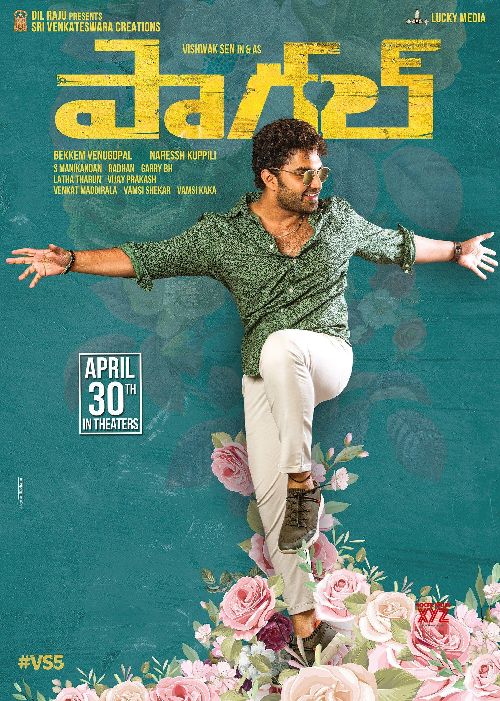
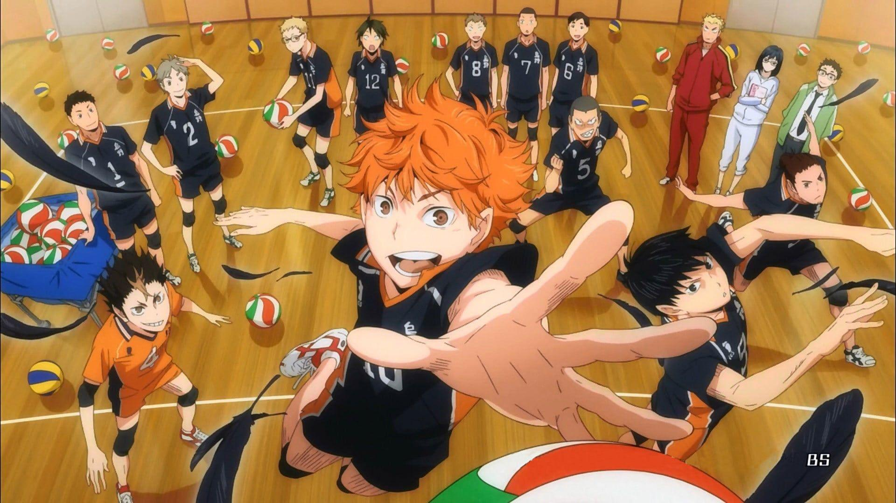

Childhood friends Vivek, Karthik, Kaushik, and Uppi hope for careers in film-making during university but eventually give up and settle into other jobs. To earn money for a wedding, they enter Goa Short film festival and rekindle their dream.
Paagal

After his mother's death, Prem, a young man, searches for love in every woman he comes across. However, when he finds true love in Theera, they face several challenges in their quest to unite.
Haikyuu!!

The story follows Shoyo Hinata, a boy determined to become a great volleyball player despite his small stature. It also focused on the Karasuno High School volleyball team and the relationship between players Hinata and Tobio Kageyama.